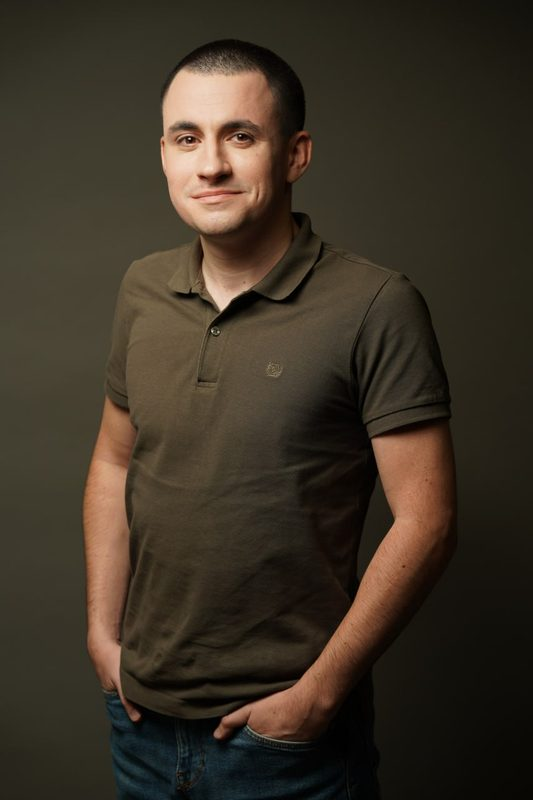
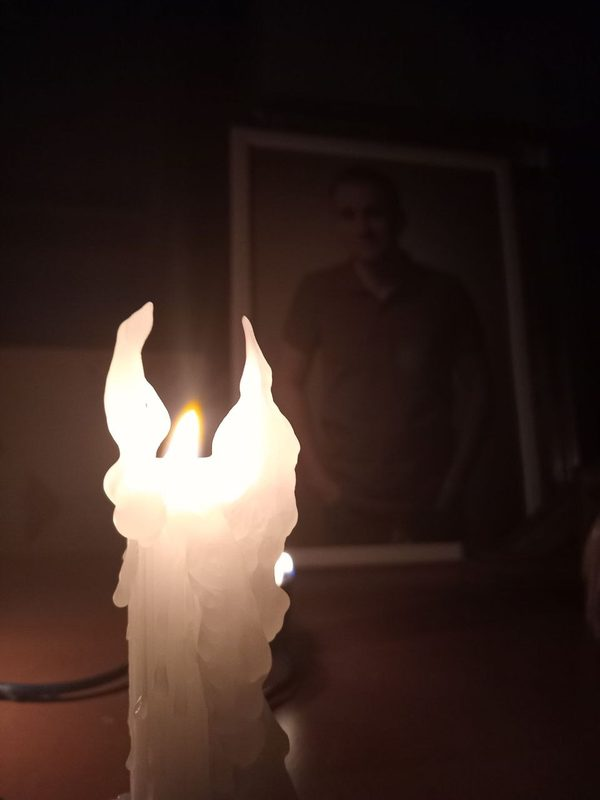

Син. Друг. Товариш. Побратим.

Лудвік Кирило Анатолійович
13.07.1995 — 13.07.2025
Вічна та світла пам'ять.
Відбір на видалення
Позначено: 0
Категорії
Вибрано: 0 · Змінено: 0
Виділи фото (клік), тоді тисни категорію вгорі — або створи нову.
Усі фото